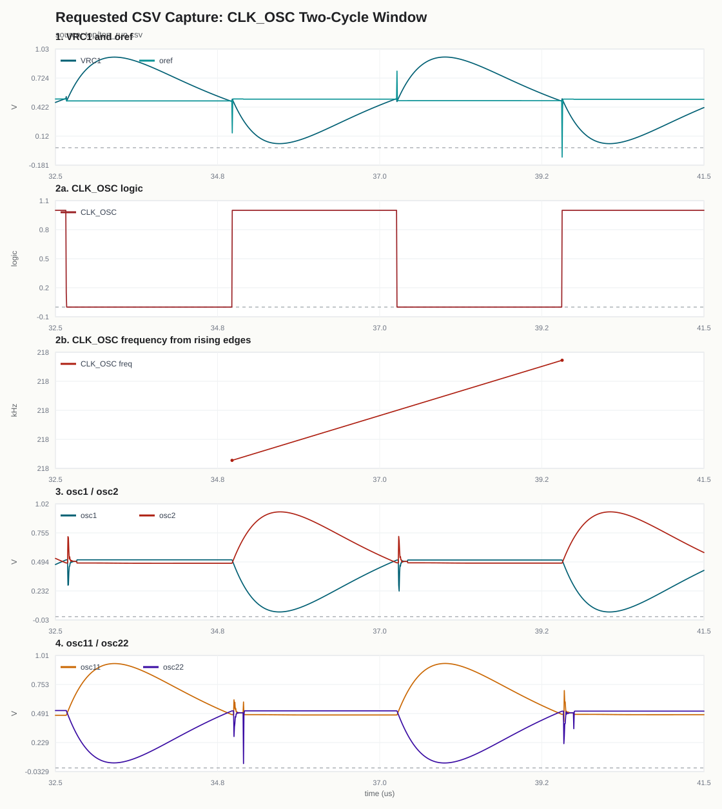

기준 전압 `oref`를 보정하며 oscillator 주파수를 조절합니다.
두 phase에서 sample한 code 차이가 남아 있으면 DLF가 `oref`를 바꾸고, `oref`가 조정되면 `VRC`와 crossing timing이 바뀝니다. 그 결과 oscillator frequency와 다음 CP hold 값이 바뀌고, 이 과정이 반복되면서 error가 0 근처로 수렴합니다.
- VRC1/VRC2
- distributed RC network의 출력 전압
- oref
- VRC1과 비교되는 기준 전압
- CP1/CP2
- CP1=osc1-osc2, CP2=osc11-osc22를 hold 후 SAR ADC한 12-bit unsigned code
- DD1/DD2
- 두 phase에서 sample한 digital code, CP1은 DD2로 CP2는 DD1로 이어짐
- DLF
- DD2-DD1에서 DIFF와 D code를 만들고 oref를 보정
동작을 4단계로 보면
1. 비교`VRC`와 `oref`의 crossing timing이 oscillator timing을 만듭니다.
2. 샘플그 timing에서 아날로그 전압을 hold합니다.
3. 판단DLF가 `DD2-DD1`에서 `DIFF`를 만들고 `D code`를 업데이트합니다.
4. 보정`D code`가 `oref`를 보정해 다음 timing과 frequency를 바꿉니다.
1. Oscillator Core

2. Sample/Hold And SAR ADC

3. CSV 그래프
CSV 수정본 요약
클릭해서 다른 파일로 들어가지 않아도, 이 섹션에서 CP/DD 매핑과 DLF 보정 흐름을 바로 확인할 수 있습니다.
CP1 -> DD2
CP2 -> DD1
DD2-DD1
DIFF -> D code
D code -> oref

CP/DD Mapping Table
osc diff는 clock edge 부근에서 본 차전압을 mV로 표시했습니다. CP와 DD는 모두 12-bit unsigned code입니다.
| event | CLK_OSC | analog source | edge osc diff mV | CP code | CP value | mapped DD | DD value |
|---|---|---|---|---|---|---|---|
| 14 | 0 | osc1 - osc2 | 0.381 | CP1 | 2112 | DD2 from CP1 | 2112 |
| 15 | 1 | osc11 - osc22 | 0.422 | CP2 | 1970 | DD1 from CP2 | 1970 |
| 16 | 0 | osc1 - osc2 | 0.050 | CP1 | 2105 | DD2 from CP1 | 2105 |
| 17 | 1 | osc11 - osc22 | 0.194 | CP2 | 1982 | DD1 from CP2 | 1982 |
DLF Operation Table
DLF는 DD2-DD1을 보고 DIFF를 만든 뒤 D code를 업데이트하고, 그 D code가 oref 전압을 움직입니다.
| event | time us | DD1 code | DD2 code | DD2-DD1 | DIFF | D code | D - 65536 | oref V |
|---|---|---|---|---|---|---|---|---|
| 8 | 35.129 | 1970 | 2112 | +142 | -142 | 64405 | -1131 | 0.504597 |
| 9 | 39.709 | 1982 | 2105 | +123 | -123 | 64675 | -861 | 0.503193 |
Closed Loop
VRC1/VRC2distributed RC 출력
VRC vs orefcrossing timing
OSC frequencyphase/frequency 변화
Hold아날로그 전압 hold
SAR ADCdigital code 변환
DLFDIFF 적분, D code update
CDAC_17bD code를 oref로 변환